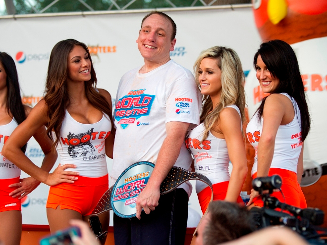
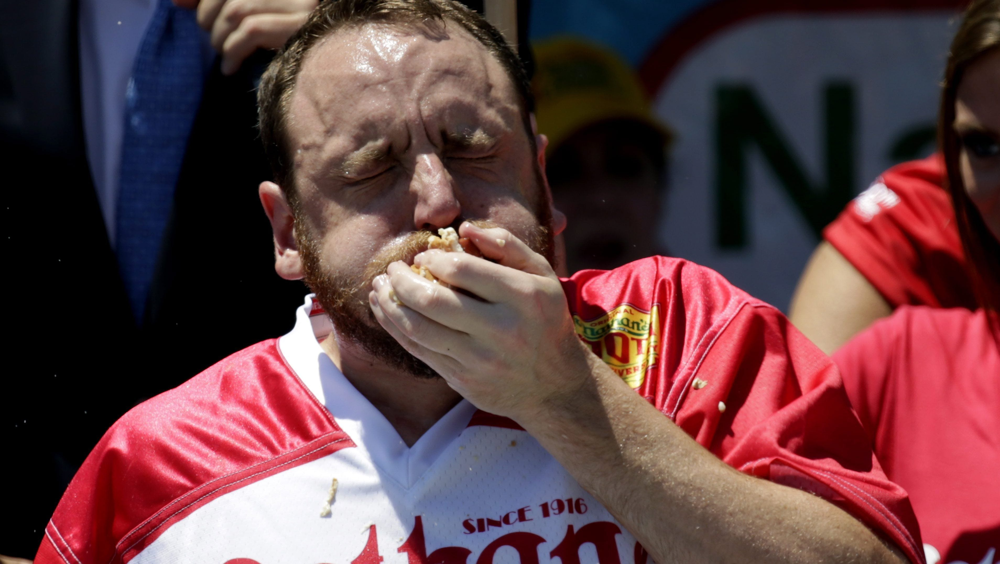

CAREER HISTORY
2005
Chestnut, a San Jose State University student, entered the competitive eating scene in 2005 with a break-out performance in the deep-fried asparagus eating championship, in which he beat high-ranked eater Rich LeFevre by eating 6.3 pounds of asparagus in 11.5 minutes. That same year, during Nathan’s Hot Dog Eating Contest, he ate 32 HDB, placing third behind Takeru Kobayashi and Sonya Thomas.
On October 22, 2005, Chestnut set a new world record for downing 32.5 grilled cheese sandwiches in 10 minutes at the Arizona State Fair, as part of the GoldenPalace.net World Grilled Cheese Eating Championship circuit.
2006
Chestnut qualified for the 2006 Nathan’s Contest by eating 50 HDB. As July 4 approached, there was speculation that 2006 might be the year when Kobayashi would be beaten. It was not to be, however. Although Chestnut turned in a great performance, leading Takeru Kobayashi through most of the contest, the final tally put Chestnut at 52 and Kobayashi at 53 3⁄4 (a new world record). Chestnut lost to Kobayashi in the Johnsonville World Bratwurst Eating Championship in Sheboygan, Wisconsin. He ate 45 bratwurst sausages in 10 minutes. Kobayashi ate 58.
2007
In 2007, Chestnut won the Wing Bowl XV, an annual Philadelphia event at the Wachovia Center. In this competition, he ate 182 chicken wings in 30 minutes, becoming a Wing Bowl champion and record holder.
On July 4, 2007, Chestnut and Kobayashi battled the field in a record-setting hot dog eating battle in Coney Island in Brooklyn, New York, at Nathan’s Hot Dog Eating Contest. Chestnut knocked off Kobayashi 66–63, leading to the latter’s first defeat in the contest in six years.
TRAINING
Chestnut trains by fasting and by stretching his stomach with milk, water and protein supplements.[30] Since the start of his competitive eating career, his competition weight has varied from 225–240 pounds (102–109 kg). After winning his sixth consecutive hot dog eating contest in 2012 by eating 68 hot dogs, he stated,
“I will not stop until I reach 70. This sport isn’t about eating. It’s about drive and dedication, and at the end of the day, hot dog eating challenges both my body and my mind.”
WORLD RECORDS (2017-2020)
2017
Glazed doughnuts: 55 doughnuts in 8 minutes
Tacos - Traditional (3-inch tortilla): 126 tacos in 8 minutes
White Hut cheeseburgers: 52 Cheeseburgers in 10 minutes
2018
Hostess® Donettes®: 257 Hostess® Donettes® in 6 minutes
Hot Dogs: Nathan’s Famous Hot Dogs and buns (HDB): 74 HDB in 10 minutes
Ice cream sandwiches: 25.5 sandwiches in 6 minutes
Mutton sandwich: 81 mutton sandwiches in 10 minutes
San Pedro Fish Market shrimp: 7 lbs of shrimp in 8 minutes
Shrimp cocktail: 18 lbs, 9.6 oz of St. Elmo shrimp cocktail in 8 minutes
2019
Croquettes: 185 croquettes in 10 minutes
Pepperoni rolls: 43 pepperoni rolls in 10 minutes
Canteen sandwiches: 28.5 Canteen sandwiches in 10 minutes
Pizza (2-foot slices): 6.5 slices in 10 minutes
Pork roll sandwiches (4 oz.): 61.5 sandwiches in 10 minutes
Carnitas tacos: 82 tacos in 8 minutes
Poutine: 28 lbs of poutine in 10 minutes
2020
Big Macs: 32 Big Macs in 38 minutes
Hot dogs: 75 Nathan’s Hot Dogs and buns in 10 minutes
SOURCES
- Text sourced from: https://en.wikipedia.org/wiki/Joey_Chestnut
- Images sourced from: https://www.grubstreet.com/2017/07/joey-chestnut-wins-nathans-hot-dog-contest-again.html
https://www.usatoday.com/story/sports/2019/07/30/joey-chestnut-chicken-wings-hot-dog-competition/1867186001/
https://www.imdb.com/title/tt10181606/mediaviewer/rm2504300033
https://bleacherreport.com/articles/1715441-joey-chestnut-dishes-on-hot-wings-kobayashi-and-a-wonderful-girlfriend